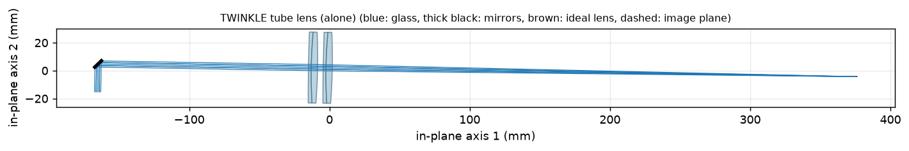
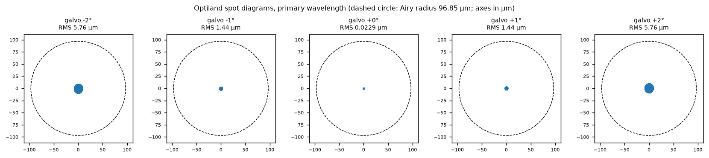

Zemax stores, for every surface whose semi-diameter is automatic, the largest ray radius it computed. We re-trace the same file in Optiland (all fields and wavelengths, 40-ring hexapolar pupil) and take the largest local ray radius. Those values come from the file itself, so they are exact Zemax output, not read off a plot. Status is computed from the tolerances in comparison.json: match within 0.5%, partial within 5%.
@@TALLY@@
Quantity
Zemax
Optiland
Difference
Result
@@VERDICT_ROWS@@
@@EXCLUDED@@
Optiland detail: what works
Requirement
Status
Notes
Load the file
Works
Loads.
Galvo angle (6 configurations)
Works, patched
Written into the file text and reloaded for each angle.
Real-ray trace, all 5 distinct angles
Works
1801 of 1801 rays reach the image at each.
Semi-diameter on automatic surfaces
Works
Matches on the lens surfaces. The galvo mirror is not scored (see above).
EFL
Works
-378.8 mm in Optiland's sign convention (reversed propagation). No Zemax value to compare.
FFT PSF, Strehl on axis
Works
Strehl 0.998 at 0° (diffraction-limited).
PSF off axis (tilted configurations)
Blocked
Paraxial engine rejects the tilt (issue 8).
System layout
Works
Drawn by this repository from Optiland's surface positions, sags and ray coordinates (Optiland's own draw fails on folds, issue 9). Glass is filled between surfaces, thick black lines are mirrors, the brown arrow-line is the ideal objective and the dashed line is the image plane. Everything is projected onto the plane of the folds.

Beam enters from below, turns at the 45° galvo mirror and passes the tube-lens pair to focus on the right. No Zemax layout was supplied; checked against the ZMX only.
Interactive 3D
Loading 3D model…
The scene from Optiland's own VTK 3D viewer, rendered offscreen and exported as glTF. Drag to rotate, scroll to zoom, right-drag to pan.
Spots against galvo angle
Works
Image NA 0.0058, Airy radius 97 µm. On axis the geometric RMS radius is 0.02 µm; at ±2° it is 5.8 µm, still far below the Airy radius.
Geometric RMS spot radius against Airy radius (dashed).
Chief-ray position against galvo angle.

Spot diagrams at each galvo angle.
Optiland issues found
Full details are in optiland_issues_found.md (issues 5 to 10 are new with these designs).
5. Surface tilts (SCBD) ignored. The tilted dichroic loads untilted, with no warning. Patched locally
6. Parameter pickups (PPAR) ignored. Only matters when a value is edited. Patched locally
7. Multi-configuration data dropped. Only configuration 1 loads; the galvo angles are configurations. Worked around
8. Paraxial engine refuses tilted systems. Blocks wavefront, PSF and Strehl on the tilted galvo systems. Open
9. 2D layout mangles folded systems. This page draws its own projection. Worked around
Semi-diameters, every automatic surface
The same comparison as the verdict table, with the ratio, including any row that was not scored.
Zemax surface
Comment
Zemax (mm)
Optiland (mm)
Ratio
@@SD_ROWS@@
Lens data
Prescription as stored in the Zemax file (coordinate breaks left out; Optiland absorbs them into the neighbouring surfaces). The Optiland radius is read back from the loaded model, so a difference would show an import error. Thicknesses are signed Zemax values: negative after a mirror.
Zemax #
Comment
Type
Radius, Zemax (mm)
Radius, Optiland (mm)
Thickness (mm)
Glass
Semi-diameter (mm)
Clear aperture (mm)
@@LENS_ROWS@@
Reproduce
export UV_PROJECT_ENVIRONMENT=~/uv_venvs/evaluation_mac
uv run python -m evaluation_tools.analyze_zmx designs/twinkle_tube_lens # about 1 to 3 minutes
uv run python -m evaluation_tools.build_summary # regenerates all HTML
zemax_text.py holds the workarounds for features Optiland ignores (tilted surfaces, pickups, configurations). analyze_zmx.py runs the analysis and build_generic.py writes this page. The Zemax files come from the TWINKLE repository.
 Loading 3D model…
Loading 3D model…